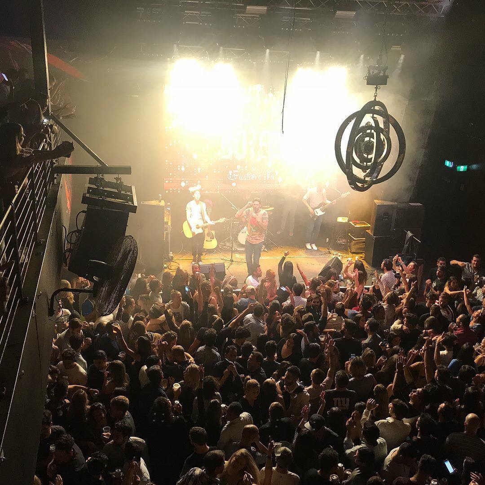

---Gustavo Vas / Fanpage---

---BIO---
Singer, Guitar player and Composer Gustavo Vas comes from a family involved in music, since he was little he has asked for influences from his brothers.
There was a rock band in the 80s and 90s, he played Pop Rock, MPB and even the vocalist of a samba group.
His last work, and best known, was as guitarist and vocalist for Banda Emmily, a HardCore band, where he was responsible for composing the songs.
However, as backcountry roots were never forgotten, Gustavo Vas never left Sertanejo and always sang with his brothers at shows.
At the beginning, he sang professionally under the name Gustavo Vas, a solo project, but always accompanied by an accordion player.
After four years with the duo and over a thousand concerts, the duo ends and Gustavo Vas returns to his new project, but now in Australia.
Gustavo Vas has presented his work throughout Australia and New Zealand.
---Favorite Song - Evidences---
Evidences